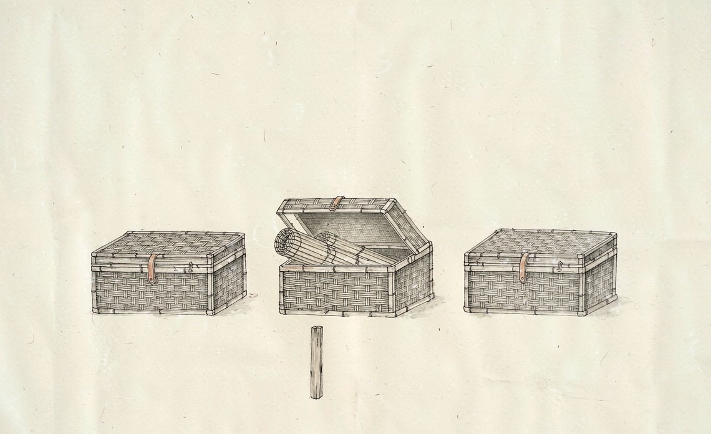
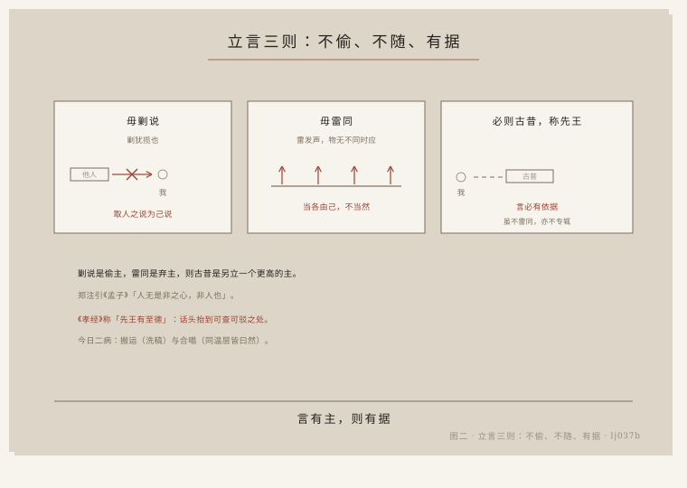

曲礼上 · 一·三十九 · 第 37 课
这一节讲立言的三条：不掠取别人的说法算自己的；不随声附和一齐说是；一定以古昔为法、称述先王。
说什么事：毋剿说，毋雷同，必则古昔，称先王。
落在哪一层：教。上节讲听，这节讲话：听来的话要自己长出根，才说得出口。
为何编在此位：先「毋儳言」收住口，再定「说什么」——一收一放，方是言礼。
【经】毋剿說。毋雷同。必則古昔，稱先王。
剿说 郑注：「剿犹揽也，谓取人之说以为己说。」
雷同 郑注：「雷之发声，物无不同时应者。人之言，当各由己，不当然也。」引《孟子》「人无是非之心，非人也」。
必则古昔 郑注：「言必有依据。」疏：「则，法也。虽不雷同，又不得专辄，故当必法于古昔之正。」
称先王 疏：「先王，圣人为天子者也。……如孔子说《孝经》，称『先王有至德』也。」
不掠取别人的话当作自己的话；不象雷响一样众声同应；一定要以古昔为法，称述先王。
三条其实是一条：话要有主。剿说是偷主，雷同是弃主；则古昔、称先王，是给自己找一个更高的主。
第一层 剿说是「偷」 郑训「剿」为「揽」，揽即搂取：把别人说的搂过来，说成自己说的。今日所谓「复述即原创」，正是此病。礼不问你懂不懂，先问你哪句话是谁的。
第二层 雷同是「弃」 郑注取雷声为喻：雷一响，万物同时应声。他说得好：「人之言，当各由己，不当然也。」——「然」是「以为然」；礼所戒者，不是附和别人，是把自己的「然」交出去。
第三层 则古昔是「有据」，不是「有靠山」 郑注四字「言必有依据」。疏再补：「虽不雷同，又不得专辄。」——不随声，也不任性；两头都关着，中间才是「法古」。
第四层 称先王：把话头抬到可公议之处 疏举《孝经》「先王有至德」为例。称先王不是搬古董，是把争论从「我说」挪到「古之圣人曾如此说」，使对方可查、可驳。
与今日何干 今日语境的两种病，此节都点了：一是搬运（洗稿、套话、转述当己见），二是合唱（同温层一齐「确实如此」）。第三条给的是治法：把话接到可核的源头上去。
| 左 | 右 |
|---|---|
| 毋剿说 | 剿犹揽也，取人之说为己说 |
| 毋雷同 | 雷发声，物无不同时应 |
| 人之言当各由己 | 不当然：不以他人之然为然 |
| 必则古昔 | 则，法也；虽不雷同，亦不专辄 |
| 称先王 | 言必有依据 |

